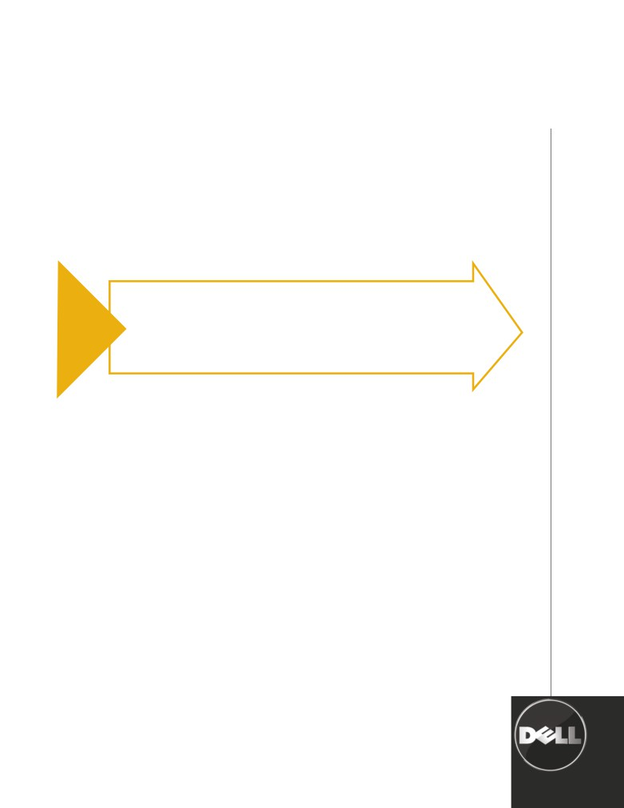

DELL PROSUPPORT
MISSION CRITICAL
OPTION
Dell’s most rapid resolution option minimizes downtime on your business critical systems
TIME IS MONEY
Every minute of unplanned downtime is lost productivity and quite often, lost revenue. Reducing recovery time from
days to hours is a must. It’s for these scenarios that Dell offers the Mission Critical option with Dell ProSupport for IT or
ProSupport for End Users. Mission Critical is Dell’s most rapid resolution option. You can choose from 2-, 4- or 8-hour
onsite parts and or labor. Rely on Dell’s proven and reliable Critical Situation Process to get you back up and
running fast.
key FEATURES OF DELL PROSUPPORT MISSION CRITICAL OPTION
• Onsite Response - 2-Hour, 4-Hour or 8-Hour onsite service1 with 6-hour hardware repair available 24x7, including
holidays. 2-hour response is not available on desktops; availability may vary by country
• Onsite Response - 2-Hour, 4-Hour or 8-Hour onsite service1, including holidays. 2-hour response is not available on
desktops.
• CritSit Procedures - Severity level 1 issues will be reviewed by Dell and may be nominated for CritSit incident
coverage through Dell Global Command Centers.
• Emergency dispatch - Onsite service technician dispatched in parallel with phone-based troubleshooting when you
declare a Severity level 1 incident.
• Priority production - In the event of a critical situation caused by natural disaster or other event normally excluded
from limited warranty, Dell will expedite production of a new system(s).
• Storage fault monitoring - Alerts from storage fault monitoring helps you maximize uptime by identifying and
correcting potential issues before they occur.
NEW REMOTE SUPPORT FEATURES FOR SERVERS WITH PROACTIVE SYSTEMS MANAGEMENT:
Spend less time troubleshooting and permit Dell to monitor and send alert notifications for most Mission Critical
servers. Utilize Dell’s new Phone Home capability to generate support cases with predetermined failure analysis so you
can see eye-to-eye with Dell technical support when a hardware failure occurs.
• Asset Visibility and Reporting - Reduce complexity with a single Web-based portal for managing assets, warranties
and hardware fault alerts.
• Warranty Tracking and Expiration Notifications - Avoid surprises and reduce admin costs with customizable
notifications before your service contracts expire.
• Hardware Monitoring and Alerting - Increase efficiency and optimize operational expenses with a SaaS monitoring
connection which notifies you within 5 minutes of a hardware failure.
• Automated Diagnostics - A connection to Dell will detect and diagnose hardware faults for faster recovery and
more accurate remediation.
• Auto-Support Case - Accelerate resolution with proactive communication from Dell allowing you to bypass
standard troubleshooting.
Dell’s award winning support can reduce severity 1 downtime by up to 22% on
average*
Shift your it
resources
from
maintenance
to momentum

dell critsit process
During critical situation events, Dell Global Command Centers will activate our CritSit Process to help
Shift your it
ensure that our expert resources are mobilized to get you back up and running fast. Dell’s CritSit
resources
Process includes:
from
• Emergency Dispatch, which provides simultaneous phone and onsite troubleshooting for customerdefined
maintenance
• Severity 1 situations
to momentum
• Problem replication in Dell’s simulation labs (as needed)
• Ongoing, scheduled situation updates to keep you informed every step of the way
Process for fast and focused resolution during “Critical Situation” events
0 MINUTES
15 MINUTES
30 MINUTES
45 MINUTES
1 HOUR
Escalation
Within
At 30 minutes,
At 45 minutes,
Escalation
Management
15 minutes,
Escalation
a real-time
Management
Customer
is engaged.
a senior analyst
Management
conference call
sends situation
Situation is
takes ownership
sends Global
takes place with
report to
Contacts
declared critical.
of the technical
notification that
stakeholders
stakeholders.
Dell
issue.
Critical Situation
to determine
is in progress.
resolution plan.
ABOUT DELL GLOBAL SERVICES
Dell Global Services simplify the management of your IT environment so you get up and running
quickly, with lower deployment costs, fewer hassles, and less time spent on non-strategic tasks. You
pay only for the services you need, gain instant access to the latest innovations without additional
infrastructure investment, and take your business from maintenance to momentum.
HOW TO GET IT
Dell ProSupport Mission Critical Option is only available for purchase along with a
Dell ProSupport service model.
simplify your it management at Dell.com/ProSupport
Availability varies by country. To learn more, customers and Dell Channel Partners should contact your sales representative for more
information.
1 May be provided by third-party. Technician will be dispatched if necessary following phone-based troubleshooting. Availability varies. See
dell.com/servicecontracts for details.
2 Based on an internal study of Severity 1 resolution time for Dell customers upgrading to Platinum Plus Enterprise Support. Select features
of Platinum Plus are now available in the Dell ProSupport Mission Critical Option. These features include critical situation procedures for
Severity 1 issues, emergency dispatch, problem replication in simulation labs, and 2-hour or 4-hour onsite response. August 2007.
*Based on an internal study of Sev1 resolution time for Dell customers using Mission Critical support Platinum Plus compared to other service levels. August 2007.